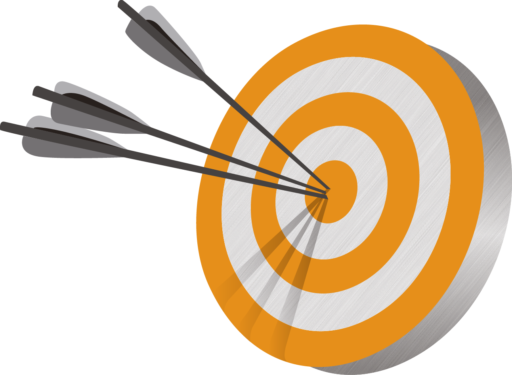

Почему бывает трудно сосредоточиться?
Психологический фактор
Вы можете потерять мотивацию и интерес к выбранному занятию. В такой
ситуации лучше поменять вид деятельности, но некоторым сложно на это
решиться. Причины бывают разные: одни не могут найти альтернативу,
вторые чувствуют за собой ответственность, третьи не представляют жизни
без некоторых занятий. Организм начинает истощаться и не успевает
восполнять ресурсы, что приводит к состоянию расфокусировки.
Внешние факторы
Потребление быстрого контента также может влиять на концентрацию. Если
регулярно смотреть минутные ролики и читать короткие посты, выполнять
сложные задачи, требующие усидчивости и внимания к деталям, будет
практически невозможно. Внимание будет постоянно переключаться на
занятия попроще. Для развития концентрации следует постепенно переходить
на длительный контент (допустим, вместо смешных видео лучше посмотреть
комедийный фильм или StandUp).
Что снижает концентрацию внимания?
Гаджеты
Многозадачность
Неправильная еда
Постоянная «включённость» может вызывать информационную перегрузку, при
которой мозг не успевает обрабатывать огромные объёмы информации. Это
приводит к снижению концентрации, ухудшению памяти и повышенной
утомляемости.
Попытка выполнять несколько действий одновременно влияет на концентрацию
и снижает продуктивность человека.
Например, «быстрые углеводы» (белый хлеб, конфеты, кондитерские изделия)
провоцируют выброс глюкозы в крови. Однако затем уровень сахара быстро
падает, человек ощущает усталость и уже не может ясно мыслить.
Как концентироваться лучше?
5 простых советов
1. Установите четкие цели:
Начните с определения своих долгосрочных и краткосрочных целей. Запишите
их и разбейте на конкретные задачи. Например, вместо общей цели
"написать отчет", уточните: "написать введение к отчету к 10:00". Это
поможет вам видеть прогресс и поддерживать мотивацию. Регулярно
пересматривайте и корректируйте цели, чтобы они оставались актуальными и
соответствовали вашим приоритетам.
2. Создайте комфортное рабочее пространство:
Обеспечьте свое рабочее место всем необходимым для продуктивной работы:
удобный стул, стол, хорошее освещение и минимальный шум. Уберите лишние
предметы и организуйте пространство так, чтобы все нужные материалы были
под рукой. Добавьте элементы, которые способствуют вашему комфорту,
такие как растения, ароматерапия или музыка без слов. Это поможет
создать атмосферу, которая будет способствовать концентрации.
3. Используйте технику "Помодоро":
Эта методика помогает управлять временем и предотвращает выгорание.
Установите таймер на 25 минут и сосредоточьтесь на работе без
отвлечений. После завершения отрезка времени сделайте короткий перерыв,
чтобы отдохнуть и восстановить силы. Используйте это время для легкой
физической активности, разминки или просто для отдыха. После четырех
"помодоро" сделайте более длинный перерыв, чтобы полностью расслабиться
и перезагрузиться.
4. Ограничьте отвлекающие факторы:
Определите, что именно отвлекает вас больше всего, и минимизируйте эти
факторы. Выключите уведомления на телефоне и отключите социальные сети,
когда работаете. Используйте приложения, такие как "Forest" или
"Freedom", которые помогают блокировать отвлекающие сайты и приложения.
Создайте "рабочий ритуал" — например, каждый раз перед началом работы
делайте несколько глубоких вдохов или пейте чашку чая. Это поможет вам
настроиться на продуктивный лад.
5. Практикуйте медитацию и осознанность:
Регулярные практики медитации могут значительно улучшить вашу
способность сосредотачиваться и снижать уровень стресса. Начните с
простых упражнений, таких как глубокое дыхание или фокусировка на одном
объекте. Выделяйте хотя бы 5-10 минут в день для медитации или
осознанности. Это не только поможет вам лучше концентрироваться, но и
улучшит общее самочувствие и эмоциональное состояние. Рассмотрите
возможность использования приложений для медитации, таких как Headspace
или Calm, для получения руководства и поддержки.
А можно в картинках?